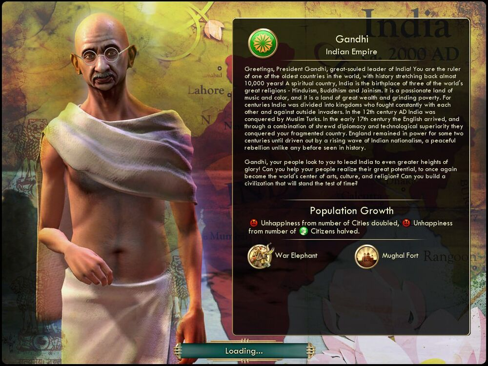

간디 Gandhi인도 India |
|  |
| 반갑습니다, 위대한 영혼을 지닌 인도의 지도자, 간디 대통령이여![2] 그대는 역사가 만 년이나 되는 가장 오래된 나라 중 하나인 인도의 지도자입니다.
영적인 나라 인도는 위대한 종교인 힌두교, 불교, 자이나교의 발상지입니다. 인도는 열정이 넘치는 음악과 색채의 땅이며, 엄청난 부와 뼈아픈 빈곤의 땅입니다.
인도는 몇백 년 동안, 끊임없이 서로 적대하고 외세와 싸웠던 여러 왕국으로 나뉘어 있었습니다. 12세기에 인도는 이슬람 튀르크에 정복당했습니다.
17세기 초에는 영국인이 건너와 약삭빠른 외교와 기술적 우월성을 무기로 산산이 조각난 인도를 정복했습니다. 영국은 약 200년간 정권을 유지했으나, 쇄도하는 인도 민족주의의 물결로 말미암아 인도에서 쫓겨났습니다. 이는 역사상 유래가 없는 평화적 혁명이었습니다.
간디여, 백성은 그대가 인도를 보다 큰 영광으로 이끌어주기를 기대하고 있습니다! 인도인의 잠재력을 실현하여 다시금 인도가 세계의 예술, 문화, 종교 중심지가 되도록 하여 세월의 시련을 이겨낼 문명을 건설해 주시겠습니까? |
| 속성 | |
|---|---|
| 특성 |
인구 성장
(Population Growth) 도시의 수에서 얻는 불행이 2배가 되지만, 시민에서 발생하는 불행이 절반으로 감소합니다. |
| 고유유닛 |
전투 코끼리
(War Elephant) 전차 궁수를 대체하는 고유 유닛입니다. 이동력이 4에서 3으로 감소하고, 생산 비용이 56에서 70으로 증가하였지만, 전투력 및 원거리 전투력이 각각 6→9, 10→11로 증가합니다. 험지 페널티가 없습니다. |
| 고유건물 |
무굴 요새
(Mughal Fort) 성을 대체하는 고유 건물입니다. 생산비용 160에서 150으로 감소합니다. 도시 전투력 +7과 도시체력 +25(성과 같음)와 문화 +2를 줍니다. 비행 개발 후에는 관광 2가 추가됩니다. |
| 시작지점 | 초원 |